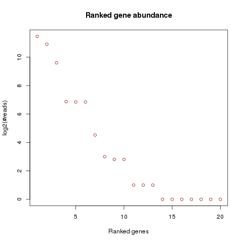
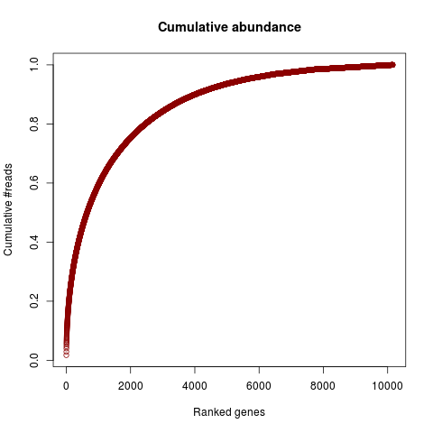
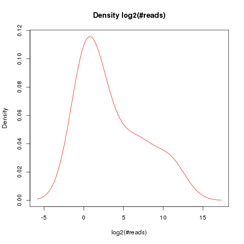
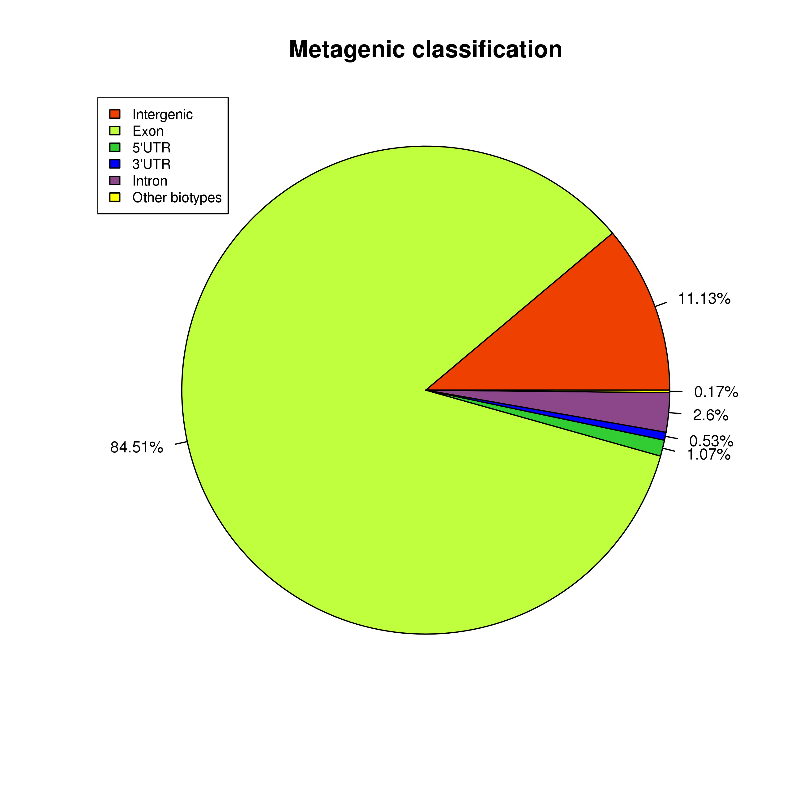
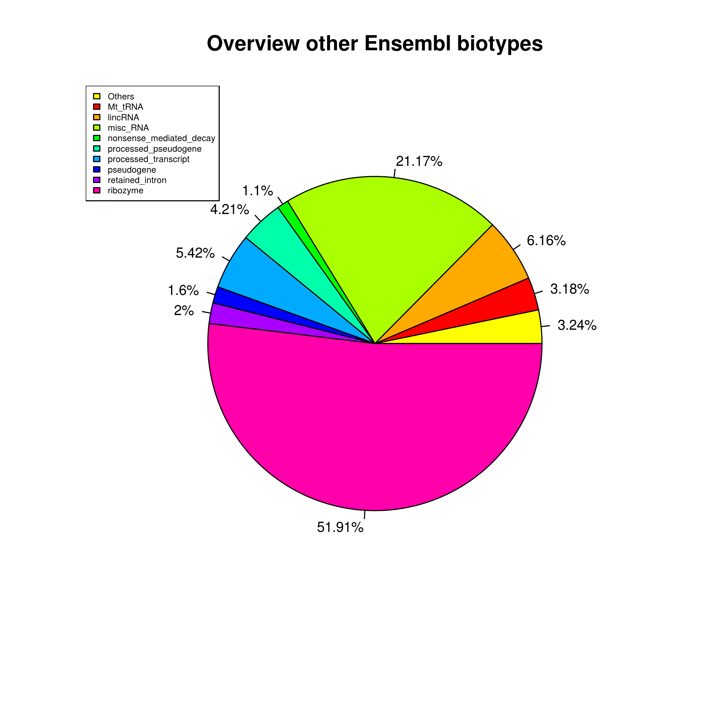
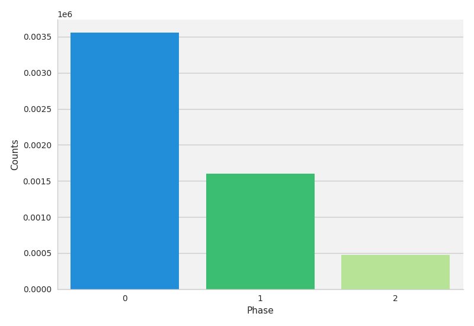
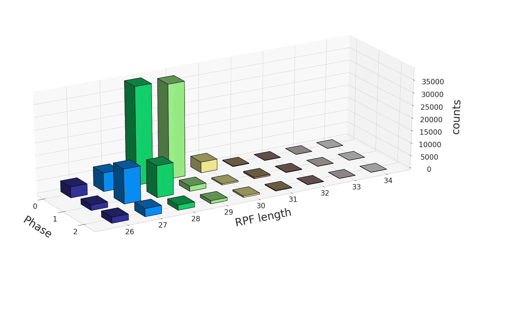
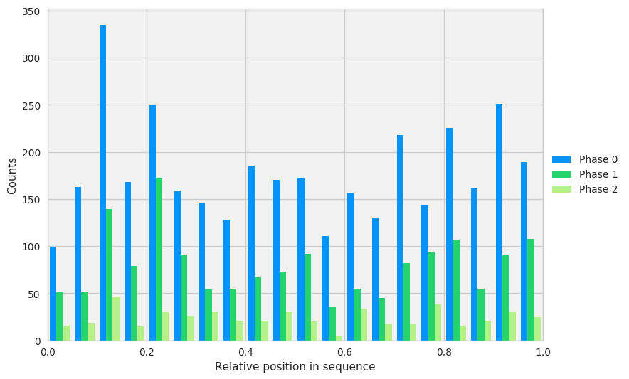
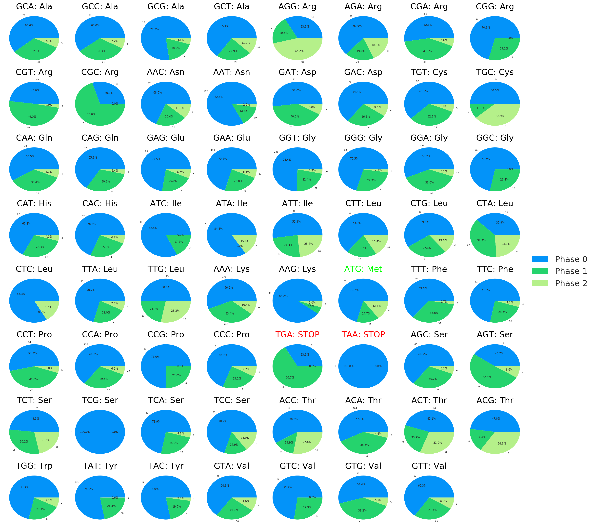

Analysis information
| Feature | Value |
|---|---|
| Species | mouse |
| Input sam file | STAR/fastq1/test_data_mESC.sam |
| Ensembl version | 86 |
| Ensembl database | /data/steven/mappingQC/test_data_mESC/tmp/ENS_mmu_86.db |
| Selected offset source | standard |
| Used only unique alignments | Y |
| Total mapped genomic sequences | 182 726 |
| Analysis date | Friday 11 Aug 2017 |
| Analysis time | 12:03:59 |
Offsets overview
| RPF length | Offset |
|---|---|
| 26 | 12 |
| 27 | 12 |
| 28 | 12 |
| 29 | 12 |
| 30 | 12 |
| 31 | 13 |
| 32 | 13 |
| 33 | 13 |
| 34 | 14 |
Gene distributions



Metagenic classification


Total phase distribution

RPF phase distribution

Phase - relative position distribution

Triplet identity plots
